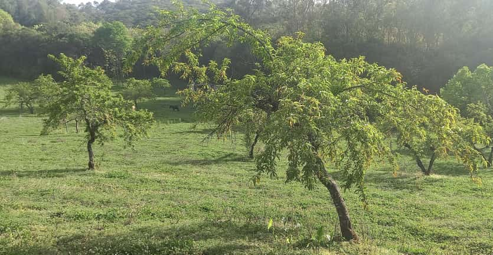

El monasterio cuenta con una fábrica de mermeladas y productos almibarados que realizamos con el asesoramiento de los obreros. Entre los más buscados están el dulce de leche, el dulce de cayote y la miel.
También elaboramos mermeladas con frutas de nuestro predio como duraznos, membrillos y ciruelas.

Productos del Siambón en Tucumán
- Santería San Benito – Ayacucho 33
- Farmacia Hahnemann – San Lorenzo 343
- Farmacia San Alberto – San Juan 152
- Regionales del Jardín – Congreso 20
En Yerba Buena:
- Forrajería Moya – Avenida Aconquija 2182